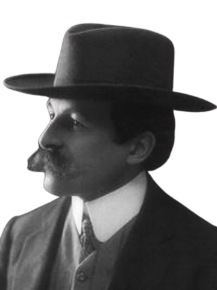

AUTHOR
莫里斯·盧布朗

莫里斯．盧布朗（Maurice Leblanc）是一位法國小說家，出生於1864年。他是「亞森·羅蘋」的創作者，也是一位著名的推理小說作家。盧布朗的代表作是「亞森．羅蘋」系列小說，其中最著名的是《亞森羅蘋：福爾摩斯的對手》。這本小說首次介紹了亞森．羅蘋這個神秘而才華橫溢的小偷角色，迅速成為了法國和國際間的暢銷書。他的作品風格精湛，文筆優美，推理情節緊湊，贏得了廣泛的讀者和讚譽。盧布朗的其他作品還包括歷史小說、愛情小說和科幻小說等多種類型。他對於文學的貢獻被認為對於法國推理小說產生了深遠的影響。他的作品也多次被改編為電影和電視劇，延續了他的文學遺產。總體而言，莫里士．盧布朗是一位不可忽視的推理小說大師，他的作品經典而精彩，為法國文學做出了重要貢獻。